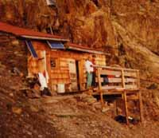

Refuge Plan Glacier (2680 m)

Département, commune : Haute Savoie, commune de St Gervais les Bains
Cartes : AsF© 16, IGN Top25 3531 ET pli E2
Situation : au pied de l’Aiguille de Tricot. Téléphone : 04 50 47 76 55
Propriétaire : Amis du refuge, 114 rue du Mt Paccard, 74170 St Gervais
Gardien : consulter le Bureau des Guides de St Gervais, même adresse, tél 04 50 93 23 25, fax 04 50 47 73 52
Ouverture et gardiennage : ouvert et gardé du 15/6 au 15/9, fermé hors cette période
Commodités : 20 places (dortoir avec matelas, couvertures ; sac à viande obligatoire),
restauration, bar,
eau de fonte (non potable) à l’intérieur.
Accès : sentier depuis La Gruvaz (1100 m) en 5 h
Itinéraires à proximité : TPMB
Randonnées à partir du refuge :
guide ou site AsF© : col de Tricot (sentier câblé)
autres randonnées : courses de grand alpinisme